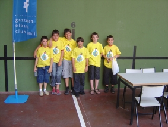
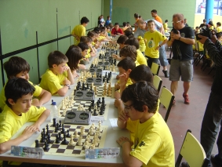
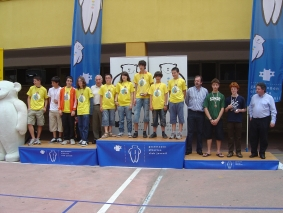

Agustin de Leitza Xake Elkartea |
| » hasiera » elkarteko bazkideak » taldekako txapelketa » azken txapelketak » loturak |
Kutxako finala Beasainen09-06-14
Igande honetan jokatu da Kutxako taldeko txapelketaren finala
Beasainen, aurkeztu dugu gure burua Anoetan sailkatu zen
Billabona-Andoain taldearekin. Finalera Billabonako jokalariez gain
Peio eta Unai joan da. Gainera, Urtzi era jokatu du Kakute taldearekin
kadete mailan (nahiz eta bera infantila izan).
Txapelketa kopa bezala jokatu da sailkatuak ziren 16 taldeen artean,
lehenengo txandan berdindu da La Salle B-ren (Zarauz) kontra, baina
zarauztarrak sailkatu dira, bigarrenean alderantziz gertatu da, eta
nahiz eta berdindu Lazkao H-ren kontra gure taldeak irabazi zuen.
Hurrengo txanda 9-13 postuengatik lehihatzeko zen, eta galdu egin
genuen San Andrés-en kontra. Azken txandan irabazi zen Landatxa
B-ren kontra eta azken sailkapena 11. izan da.
Gure ustez paper ona egin du taldeak, alde batetik finalera
sailkatzeagatik eta bestaldetik, ematiza on lortzeagatik nahiz eta
Rubén eta Gorka ez egon taldean. Kadetari dagokionez ezin
hobeto, Urtziren taldeak irabazi du txapelketa eta Urtzik ondo jokatu
du. |